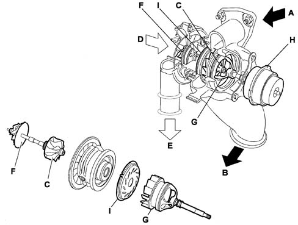
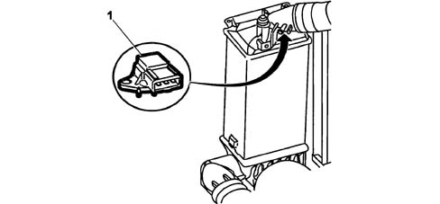
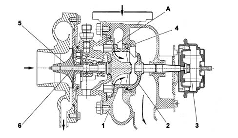
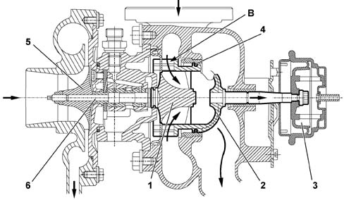

SUBASSEMBLY GRAPHIC INDEX
- Path
- Descriptions > 10 ENGINE > 1064 ENGINE SUPERCHARGING SYSTEM > SUBASSEMBLY GRAPHIC INDEX
- Kind
- system description
- Applies to
- engines: 2.0 16V JTD, 2.2 16V JTD; all production periods
- Interactive page
- https://sloeber94.github.io/elrnDB-fUlss/en/#/179006612
Applies to: engines: 2.0 16V JTD, 2.2 16V JTD; all production periods
INTRODUCTION
Engine power is directly proportional to air mass and the corresponding amount of fuel that can be introduced into the cylinders.
It is therefore possible to increase engine power by adding an amount of air at each cycle that greater than the amount the engine is able to take in by pumping air into the cylinder.
This higher quantity of added air can be used to burn a correspondingly higher amount of fuel and thus produce more pressure, work and engine power.
Supercharging, using a turbocharger, increases engine turbulence helping to reduce specific consumption.
The turbocharger fitted on the vehicle is the variable geometry type; it makes it possible to:
- increase the speed of the exhaust gases in the impeller turbine at low speeds;
- decrease the speed of the exhaust gases in the impeller turbine at high speeds;
- adapt the speed of the impeller turbine to the variation in the exhaust gas flow rate.
The following figure shows the turbocharger.

A, Gas coming from the exhaust manifold | F, Compressor turbine |
B, Outlet to the catalyzer | G, Regulation piston passage section |
C, Turbine | H, Piston pneumatic actuator |
D, Air arrival | I, Passage section |
E, Compressed air outlet |
The turbocharger is basically composed of two distinct sections: the "turbine" and the "compressor".
An impeller rotates in each section.
The impellers are fitted on the same shaft which rotates, at extremely high speed, on bushes lubricated by a channel from the engine lubrication circuit.
This lubrication oil also dissipates part of the great quantity of heat yielded up by the exhaust gas to the turbine.
An impeller known as a turbine connected to the exhaust manifold is caused to rotate by residual energy in the gas directed over it.
The rotation of the turbine also causes the other impeller known as a compressor that is connected to the intake manifold to move (at the same speed).
Due to its speed of rotation and the specific shape of its vanes, this compressor is able to taken in outside air and compress it in the intake manifold and hence the engine cylinders.
When the engine rpm increases, the turbine and compressor also turn faster to increase the amount of air supplied to the engine.
The engine develops more power but the flow of exhaust gas increases and makes the turbine turn even faster.
This cycle continues until one of the engine or turbocharger components breaks.
It is therefore vital to have a supercharging pressure regulation system.
This system consists of limiting the turbine rotation speed, acting on the flow of exhaust gases when the desired pressure is reached.
This produces a reduction in the turbine rotation speed.
OPERATION OF THE VARIABLE GEOMETRY TURBOCHARGER
In a centrifugal compressor the supercharging pressure is proporational to the rotation speed of the turbine.
The variation in the section where the gases enter the turbine (l) makes it possible to alter the speed of the actual gases that cause the rotation of the turbine (C).
The rotation speed of the turbine needs to be high to produce a high supercharging pressure when the flow rate and the kinetic energy of the exhaust gases are weak.
In this case, the gases need to be offered a small section to pass through in order to increase the speed of the exhaust gases at the turbine.
Conversely, when the section increases, the speed of the exhaust gases decreases and, as a result, so too does the rotation speed of the turbine with a consequent decrease in the supercharging ratio.
The regulation of the supercharging pressure is achieved by varying the section through which the exhaust gases enter the turbine.
This section can vary from a minimum value (piston at rest) to a maximum value.
In this type of turbocharger, in any engine load and speed conditions, the total amount of exhaust gases pass through the turbine with the advantage, compared with other types, of avoiding energy waste.
MANAGEMENT OF SUPERCHARGING PRESSURE
The adjustment of the supercharging pressure is gradual.
It is managed by the NCM on the basis of an engine management strategy that varies according to the engine speed and load.
This adjustment is implemented according to the supercharging pressure.
The value at the supercharging pressure is supplied by the intake air pressure sensor, located on the air/air heat exchanger (intercooler).
To prevent the turbocharger from being ruined, the NCM slightly reduces the maximum supercharging pressure.
This reduction is implemented in the following cases:
- altitude above 500 m;
- inlet manifold temperature above 28°C.
View of air pressure sensor fitting

1, Intake air pressure sensor
Operation at low engine rotation speeds
When the engine is operating at low rotation speeds, the exhaust gases possess little kinetic energy: under these circumstances a conventional turbine would rotate slowly, providing limited supercharging pressure.
With the variable geometry turbine on the other hand, the section regulation piston finds itself in the maximum closed position and the small section increases the speed of the intake gases.
Greater intake speeds result in greater peripheral speeds for the turbine and, consequently, the compressor.
Operation at low speed

A - rest position
1, Turbine impeller | 4, Seal |
2, Regulation piston passage section | 5, Compressor impeller |
3, Pneumatic actuator | 6, Impeller shaft. |
Operation at high engine rotation speeds
As the rotation speed of the engine increases, there is a gradual increase in the kinetic energy of the exhaust gases.
As a result, the speed of the turbine increases and consequently also the supercharging pressure.
The passage section regulation piston, controlled by the solenoid valve, moves, opening the passage until the maximum opening position is reached.
The increase in the section produces a slowing down of the flow of the exhaust gases passing through the turbine at speeds which are the same as or less than the low speed condition.
The speed of the turbine decreases and settles down at a suitable level for the correct operation of the engine at high speeds.
Operation at high speed

B - fully open position
1, Turbine impeller | 4, Seal |
2, Regulation piston passage section | 5, Compressor impeller |
3, Pneumatic actuator | 6, Impeller shaft. |